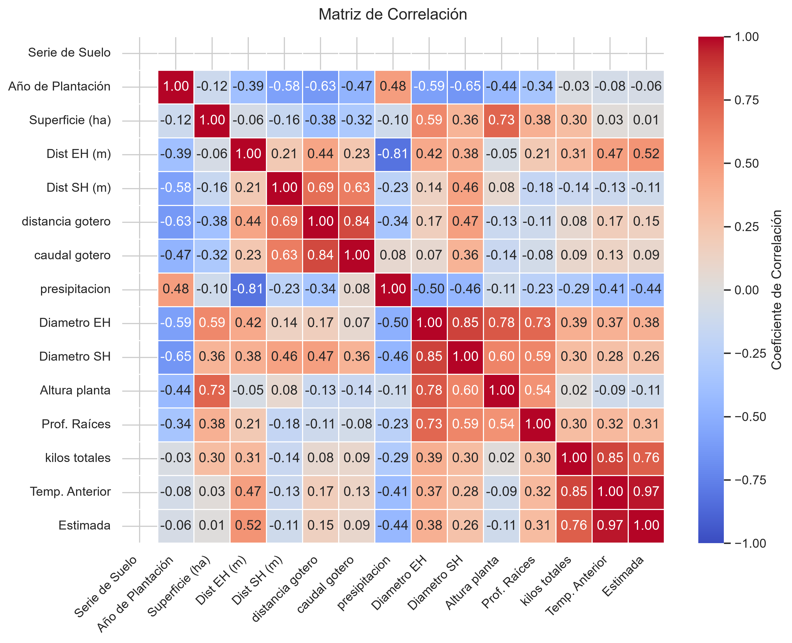
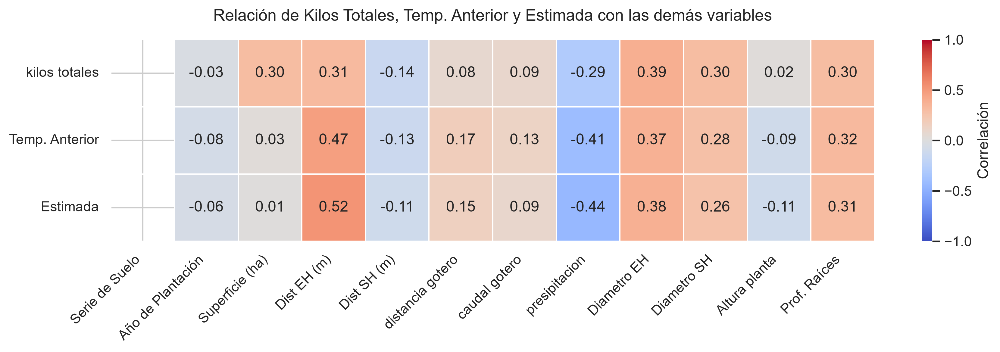

Visualización interactiva de cuarteles, mapas por año y matrices estadísticas.
Visualiza el comportamiento de los cuarteles diferenciando las temporadas 2020, 2021 y 2022.
Abrir Mapa InteractivoDistribución espacial exacta basada en la ubicación geográfica de cada campo.
Abrir Mapa InteractivoMagnitud de la producción por cuartel vinculada a la altura de planta.
Ver GráficoComparativa entre Limonero y Palto a lo largo de los años.
Ver GráficoAnálisis de las variables climáticas de control.
Ver GráficoRelaciones estadísticas entre las variables numéricas del estudio.

Vista ampliada de coeficientes y correlaciones cruzadas.
